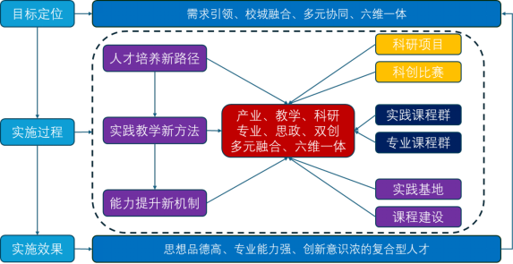
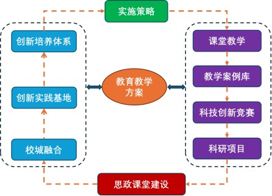

1. 研究背景与意义
习近平总书记指出，信息技术是全球技术创新的竞争高地。在国家深入实施“科教兴国战略、人才强国战略、创新驱动发展战略、加快数字化发展战略”的背景下，新一代信息技术迅猛发展，既为我国全面现代化建设注入新动能，也为山东省智能制造产业升级提供新机遇。然而，当前电子信息类专业研究生创新能力培养仍存在诸多短板，亟需通过改革与创新实践，适配新时代人才需求。
山东科技大学作为工科优势突出、行业特色鲜明的山东省重点建设应用基础型人才培养特色名校及高水平大学“冲一流”建设高校，积极响应国家学位与研究生教育改革要求。依托电子信息专业大数据技术与工程、网络信息安全两大核心领域，针对专业学位研究生创新培养痛点，在“校城融合、产教协同”实践中，将数字化应用深度融入卓越工程师创新人才培养体系，重点破解“学科壁垒破除”与“资源整合”两大难题，通过搭建多元化数字化平台提供核心支撑，具体聚焦以下两大方向：
- （1）多元融合共建服务城市的校企协同研究生联合创新实践基地。 深化校地、校企、校政三方联动，构建“校-城-企”相互促进的生态体系。通过搭建研究生创新实践平台，完善校城融合产教协同的研究生培养机制，既助力企业提升持续发展能力，也推动高校办学水平与地方产业需求深度绑定，实现“服务城市发展”与“培养创新人才”的双向赋能。
- （2）协同创新培养具有创新实践能力的信息产业链人才。 建立“科研项目驱动、产学研地合作、多学科交叉融合”的协同创新机制。通过将产业链实际需求转化为研究生培养课题，同步提升研究生的学术创新能力与服务社会实践能力，为信息产业链输送“能攻关、善落地、懂产业”的高层次创新人才。
我校关于“校城融合、产教协同：电子信息专业学位研究生创新能力培养体系建设与实践”的整体思路如图1所示。

图1 电子信息专业学位研究生创新能力培养体系建设与实践
成果实施基础：学校已与山能装备、泰开集团、海天智能等龙头企业共建研究生联合培养基地，并获批山东省重点实验室、山东省工程研究中心、山东省数据创新开放实验室、泰安市工程实验室等一批高水平研究生创新实践基地与科技创新平台，为体系落地提供坚实保障。
初期实践成效：专业建设持续优化，人才培养质量显著提升。近三年，承担校级以上教改项目20余项，发表教改论文、出版教材10余部；建成《工业互联网》《数据挖掘》等研究生教学案例库及《机器学习》等优质课程；研究生获国家级、省级竞赛奖励10余项，发表SCI/EI索引论文100余篇，获授权发明专利20余项、软件著作权50余项；研硕2021级1班获评“山东省先进班集体”，网络空间安全创新团队党支部获评“山东省先进基层党组织”、“泰安市挑山工先进基层党组织”。
2.主要研究问题
在“大众创业、万众创新”国家战略与“互联网+”背景下，大数据、人工智能、虚拟现实等新一代信息技术推动我国经济结构升级，也为山东省智能制造产业带来机遇。电子信息类（含大数据技术与工程、网络空间安全、机械工程、控制工程、电气工程等方向）研究生作为创新发展的中坚力量，其卓越工程师创新能力培养仍面临三大核心问题：
（1）创新人才培养体系不完善，研究生主动创新动力与核心素质不足
- ① 课程体系脱节：未融合校、企、城资源与企业技术需求，仍以传统理论讲授为主，缺乏产业场景化创新案例教学；
- ② 激励机制失衡：过度侧重论文发表，对校企联合项目中的技术突破、创新问题解决等实践成果奖励不足，削弱学生创新动力；
- ③ 实践平台缺失：缺乏校企城共建的创新平台，学生难以参与真实产业研发与技术优化项目。
最终导致研究生创新意识淡薄，将科研视为“任务式工作”，在技术整合、场景落地等核心素质上存在短板，无法支撑卓越工程师培养目标。
（2）人才培养模式与产业需求脱节，创新实践能力培养薄弱
- ① 课程更新滞后：未紧跟产业迭代节奏，如大数据技术与工程方向过度聚焦算法理论，忽视产业急需的落地应用与场景适配能力；
- ② 实践环节形式化：校内实践多基于公开数据集模拟训练，校外实习以“参观式体验”为主，缺乏校企城共建的沉浸式实训平台；
- ③ 协同机制松散：企业未深度参与培养方案设计，导致培养目标与产业需求脱节。
毕业生进入职场后，常因缺乏工程化落地经验，难以快速胜任实际工作，创新实践能力无法满足产业智能化升级需求。
（3）培养过度依赖校内资源，多学科交叉融通能力不足
- ① 学科壁垒森严：电子信息、机械工程、网络空间安全等专业课程体系割裂，交叉领域课程匮乏；
- ② 外部资源整合不足：未有效联动企业技术资源与城域科研力量，缺乏“校-企-城”三方共建的交叉科研创新平台；
- ③ 教师指导能力短板：教师跨学科指导经验不足，难以培养学生“整合多元技术、对接工业场景”的综合能力。
最终导致学生面对复杂创新任务时，无法运用多学科知识形成系统性解决方案。
3.主要研究方法
针对学校实际与企业需求，围绕“新型工业化、黄河战略、城市提升、共同富裕”等重大战略，通过“产业链调研—资源对接—机制创新—平台搭建”的路径，构建校城融合、产教协同的培养体系。具体技术路线如图2所示，核心方法包括以下七项。

图2 解决教育教学问题的方法路线图
（1）完善创新型人才培养体系，夯实育人基础
以立德树人为根本，以“应对变化、塑造未来”为理念，以“继承与创新、交叉与融合、协调与共享”为路径，聚焦未来多元化创新型卓越工程人才培养：
- ① 强化师资队伍建设：通过高层次人才引育，提升教师教学质量与科研水平；
- ② 营造优良学术生态：鼓励导师与研究生深度互动，形成“教学相长”的培养氛围。
依托该体系，山东科技大学2021级硕研1班于2024年5月获评“2023年度山东省高等学校省级先进班集体”。
（2）推进多学科交叉，拓展培养维度
立足大数据技术与工程专业优势，整合校内电子信息类师资、实验设备与教学资源，成功申请网络空间安全硕士学位授权一级学科点：
- ① 明确交叉人才定位：培养“高层次、复合型、应用型”网络安全人才，具备理论基础、实践能力与创新精神，可服务于政府、企业、科研院所；
- ② 打破学科壁垒：构建“电子信息 + 网络安全 + 机械工程”等交叉课程体系，提升学生综合技术能力。
（3）构建校企协同培养体系，激发创新动力
以蓝光软件、海天智能等IT企业的创新需求为导向，建立“校企协同电子信息类研究生联合培养指导委员会”，从机制层面激发学生主动创新意识：
- ① 设立专项激励：创建研究生创新企业奖学金、创新学分，建立“创新导向”的奖助体系，量化竞赛获奖、论文发表、专利授权等成果的奖励标准；
- ② 优化培养方案：联合企业制定专业人才培养方案与课程体系，确保课程内容适配产业需求。
近三年，该体系推动电子信息专业研究生导师承担校级以上教改项目20余项，组建校级教学团队1支，发表教改文章、出版教材10余部。
（4）校企城共建联合创新实践基地，搭建实践平台
深化与企业的实质性合作，共建高水平创新实践基地：
- ① 打造标杆实验室：与山东海天智能工程有限公司联合组建“山东省脑机接口与智能诊疗康复系统重点实验室”，整合山东省技术创新中心等省部级平台，实现一体化运作；
- ② 拓展合作网络：通过“访企拓岗”专项活动，与泰安市多家企业建立合作，共建研究生创新实践基地，让学生深度参与高校与企业的真实科研场景，提升工程素质与实践创新能力。
（5）研发实践教学案例库，丰富创新资源
针对企业实践资源利用不充分的问题，校企联合研发教学案例库，创新资源转化路径：
- ① 建设优质案例库：共建《数据挖掘》《工业互联网》等省级案例库，《现代控制理论》《混合学习模式下的系统建模与仿真》等校级案例库；
- ② 搭建开放共享平台：采用云计算、虚拟仿真等技术，建设网上实验实践教学平台，实现校内外资源开放式共享，增强学生创新实践经验。
（6）以竞赛与项目为驱动，打造创新团队
建立“科研项目 + 科技竞赛”双驱动机制，培养学生竞争意识与合作精神：
- ① 完善激励保障：制定学生参与教师科研项目、企业项目的激励政策，配备专职指导教师与专用实验环境，定期开展训练；
- ② 聚焦赛事突破：引导学生参加软件设计、物联网、信息安全、嵌入式等全国性竞赛。
近三年，研究生获各类国家级、省级竞赛奖励10余项，形成一批稳定的创新团队。
（7）深化产学研合作，提升创新能力
通过“校企技术攻关、教师实践赋能、学生成果转化”的闭环，将学科知识转化为实际生产力：
- ① 带动教师成长：组织教师参与企业研发机构合作、技术攻关项目，提升科研水平与实践能力；
- ② 融入培养全过程：将创新精神与实践能力培养融入课程教学、实践环节等各环节。
近三年，研究生发表SCI/EI索引论文100多篇，获发明专利、软件著作权70多项。
4. 成果创新点
（1）创新“校-政-行-企”协同的教育产业发展共同体
突破传统“校企合作”的浅层模式，构建“学校、政府、行业、企业”深度协同的融合机制，形成“教育与产业统筹融合、积极互动、合作共赢”的发展模式：
- ① 核心目标：解决人才供给与产业需求的结构性矛盾，支撑国家经济产业转型升级；
- ② 差异化优势：通过政府引导、行业协调，推动校企资源从“零散合作”转向“系统整合”，实现育人与产业发展的同频共振。
（2）建立“校内 + 校外”双协同的创新机制
构建“校内协同（学科融合）+ 校外协同（寓教于研、校企合作）”的双层协同机制，推动创新型人才培养内涵式发展：
- ① 校内协同：打破学科壁垒，整合电子信息、机械工程、网络安全等学科资源，开设交叉课程，培养学生系统思维；
- ② 校外协同：以企业真实项目为载体，将科研与教学结合，提升研究生综合素质。
该机制有效提高了学校研究生人才培养质量，实现“学术创新”与“产业应用”的双向贯通。
（3）创建“平台 + 机制”双支撑的协同育人模式
以产业需求为导向，通过“实践创新平台建设”与“协同育人机制优化”，培养复合型创新人才：
- ① 搭建一流平台：校企联合创建电子信息新兴领域实践创新平台，整合科研资源，服务产业发展；
- ② 改革实践教学：优化实践教学环节，强化“信息 + 通信 + 人工智能”等多学科交叉，适配“从学科导向转向产业需求导向、从适应服务转向支撑引领”的新要求；
- ③ 探索无缝对接：研究实践创新人才培养新模式，实现“学校培养”与“企业需求”的无缝衔接。
5. 推广应用效果
“校城融合、产教协同：电子信息专业学位研究生创新能力培养体系建设与实践”项目实施以来，在学校与学院的支持下，已在电子信息专业学位硕士研究生培养中全面推广，取得显著成效，具体体现在以下三方面：
（1）研究生主动创新意识显著增强
- ① 学习积极性提升：学生参与科研创新活动的意愿明显增强，形成“教、学、研、用”相互促进的良性循环；
- ② 创新生态成型：构建“教、学、研、用”相长的新生态培养模式，研究生主动申报专利、参与竞赛、发表论文的数量大幅增长。
（2）研究生创新能力与综合素质明显提高
- ① 实践能力突破：学生在项目研发与团队合作中，学会协调沟通、解决复杂问题，实现“理论到实践”的平滑过渡；
- ② 成果产出丰硕：近三年，研究生获省级先进班集体1项，国家级、省级竞赛奖励10余项，发表SCI/EI索引论文100余篇，获授权发明专利20余项、软件著作权50余项。
（3）毕业生社会满意度与生源质量双提升
- ① 用人单位评价优异：跟踪调查显示，用人单位普遍认可毕业生“道德品质优、行业适应强、专业基础实、实践创新能力突出”，能快速胜任岗位需求；
- ② 社会认可度提高：学校与专业知名度逐年提升，研究生录取分数线持续走高，培养质量获得社会、家长与学生的广泛认可；
- ③ 服务社会经济发展：近三年，研究生导师团队与8家企业完成20余项横向科研项目，合同到账经费2000余万元；3项专利成果转化金额达550余万元，为新质生产力发展提供人才与技术支撑。